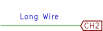
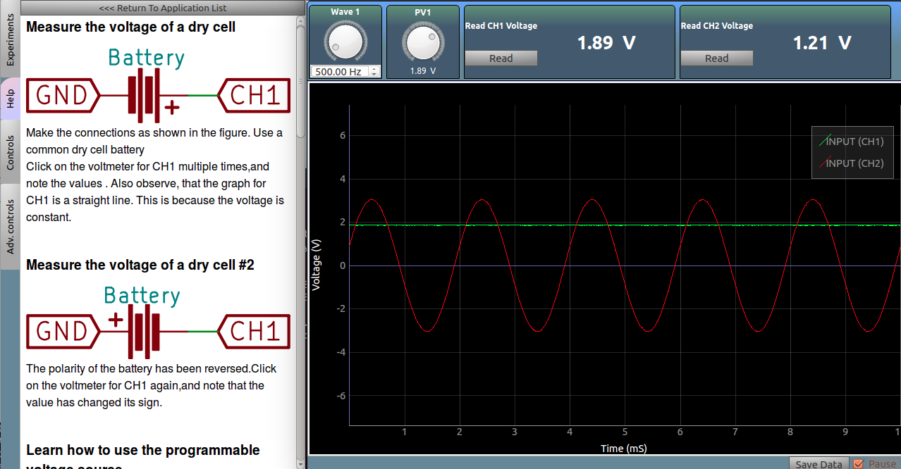

AC and DC
Study the difference between AC and DC circuits
Measure the voltage of a dry cell
Make the connections as shown in the figure. Use a common dry cell battery
Note the values shown by the voltmeter for CH1 . Also observe, that the graph for CH1 is a straight line. This is because the voltage is constant.
Measure the voltage of a dry cell - 2
The polarity of the battery has been reversed. Observe that the voltmeter for CH1 has changed its sign.
Learn how to use the programmable voltage source
PV1,PV2, and PV3 are voltage sources whose output voltage can be controlled via the software. Connect PV1 to CH1, and observe the plot as well as the measured DC voltage of CH1.
Now drag the PV1 dial, or use the mouse scroll wheel over it, to change the voltage output from PV1. Read the voltage, and observe that the voltage always stays close to the set value.
Learn how to use the programmable waveform generator
W1, and W2 are oscillating voltage sources whose output frequency can be controlled via the software. Connect W1 to CH2, and observe that the plot oscillates around the horizontal axis.
Measure the DC voltage of CH2, and observe that the values fluctuate.
Set W1 frequency to 500Hz using the dial, and click on the plot to activate the crosshairs. Note the time period of the oscillations, and confirm that the measured frequency is the same as that which was set.
You may use the ‘pause’ button located at the bottom right of the window in order to freeze the graph before taking readings.
Power Line Pickup

Connect a long wire to CH2, and observe that the plot starts oscillating around the horizontal axis.
Note the time period of the oscillations by using the crosshairs, and confirm that the measured frequency is the same as that which was set.
The timescale of the plot is set to 10mS , so you may simply count the total number of cycles on the plot in order to measure the frequency
